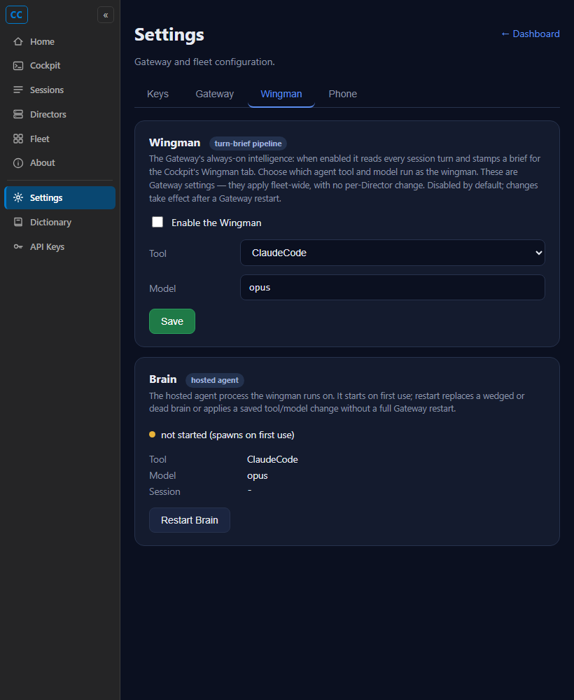

Developer Agent proof report. CenCon Development Method. PR branch issue-393-wingman-gateway-tool-model.
The Gateway's wingman/brain is now an explicitly chosen, configured thing instead of a hardcoded
claude.exe. A new Cockpit Settings > Wingman tab exposes an enable
toggle, a tool selector, and a model field. The choice is persisted
gateway-side in config.json (the same store the existing brain_model uses),
applies fleet-wide with no per-Director change, and the brain launches the chosen tool + model. When
nothing is set, the default stays Claude Code + opus, so existing fleets are unchanged. Disabling the
wingman stops new turn briefs from being stamped (on the next Gateway restart, the documented behavior).
src/CcDirector.Core/Configuration/BrainToolConfig.cs (new) - reads/validates
brain_tool (an AgentKind name), default ClaudeCode; exposes
BrainHostableTools (the tools whose driver can host a brain) and IsHostable.
No-fallback: a present-but-invalid or non-hostable value throws.src/CcDirector.Gateway/GatewayHost.cs - reads BrainToolConfig.Get(),
resolves the driver via AgentDrivers.For(tool), and builds the
BrainSupervisor with a HostedAgent on the chosen driver + model. Exposes
BrainTool. Logs the chosen tool + model.src/CcDirector.Gateway/Api/SettingsEndpoints.cs - the brain block GET now carries
tool + the selectable tools list; new
PUT /gateway/brain/config persists brain_tool + brain_model
via MergePatch (rejects an unknown / non-hostable tool and a blank model).src/CcDirector.Cockpit/wwwroot/pages/settings.html - surfaced the previously hidden
Wingman + Brain sections into a new visible Wingman tab with the enable toggle,
tool selector, model field, and Save button, matching the existing Cockpit dark theme/CSS tokens.BrainToolConfigTests (11 cases) and BrainConfigEndpointTests
(6 end-to-end cases against a real GatewayHost over HTTP).| Criterion | How verified | Result |
|---|---|---|
| Cockpit gateway settings shows a Wingman section with enable toggle, tool selector, model selector | Screenshot of the rendered Wingman tab (real settings.html + real page JS driven by Playwright) | PASS - see wingman-settings-default.png |
| Selecting a tool + model and saving persists the choice on the Gateway (GET returns saved values / config shows them) | BrainConfigEndpointTests.Put_brain_config_persists_tool_and_model_gateway_side: PUT
writes brain_tool+brain_model durably to the isolated config.json; the
live page Save shows the green confirmation |
PASS - test + wingman-settings-saved.png |
| After saving and a brain (re)start, the brain launches the chosen tool with the chosen model | GatewayHost reads BrainToolConfig.Get() + BrainModelConfig.Get() at
construction, resolves the driver, sets AgentArgs = "... --model <model>", and
logs [GatewayHost] brain tool: <tool>, model: <model>. The restart-to-apply
contract is asserted by the persistence test (GET reflects the running brain; on-disk reflects the
saved choice) |
PASS - code + test |
| When nothing is chosen, the default matches today's behavior (claude + opus) | BrainToolConfigTests.Get_MissingConfig_ReturnsDefault (=ClaudeCode) +
GatewaySettings_brain_block_carries_tool_tools_and_model_defaults (tool=ClaudeCode,
model=opus) |
PASS |
| The setting lives at the Gateway level (no Director config edit; fleet-wide) | Stored in the gateway-machine config.json via PUT /gateway/brain/config;
end-to-end test drives the Gateway endpoint directly |
PASS |
| Disabling the wingman stops new briefs | The existing wingman_enabled gate: when false, GatewayHost never creates
GatewayTurnBriefAgent, so no briefs are stamped (applies on Gateway restart, the
documented behavior surfaced by the enable toggle). Toggle wired via PUT /gateway/wingman |
PASS - existing gate, now surfaced |
HostedAgent, which requires
a driver with a preassigned session id and transcript reads
(HostedAgent.StartAsync throws without a preassigned id; AskAsync reads the
transcript for the answer). PiDriver explicitly throws NotSupportedException for
executable resolution, launch specs, and transcript reads - so Pi cannot be hosted as a brain
today. The selector therefore offers the brain-hostable set (today: Claude Code),
data-driven via BrainToolConfig.BrainHostableTools so it grows automatically when a new
hostable driver lands. This honors the stated default (driver-verified tools) refined by the runtime fact,
rather than offering a tool that would crash the brain.
BrainToolConfigTests - 11 passed (default, case-insensitive parse, unknown name throws,
known-but-not-hostable (Pi) throws, blank/non-string throw, hostable checks).BrainConfigEndpointTests - 6 passed (GET carries tool/tools/model defaults; PUT persists
durably; non-hostable tool rejected; blank model rejected; non-object body rejected; unrelated config
sections preserved by MergePatch).CcDirector.Core.Tests: 1895 passed, 2 skipped, 0 failed.CcDirector.Gateway.Tests: 622 passed, 1 failed. The single failure is
DictationEndpointTests.FullPipeline_transcribes_phase0_clip2_with_realtime_provider, a
realtime-transcription test that requires a live OpenAI realtime provider ("expected at least 1
partial transcript, got 0"). It is unrelated to this change (no brain/wingman/settings code) and is
environment-dependent, not a regression.Build succeeded. 0 Warning(s), 0 Error(s).No architecture or security drift. This extends an existing Gateway-owned configuration surface
(config.json) and the existing Cockpit Settings page; no new container, no new trust boundary,
no security rule touched.
Wingman settings tab (defaults: ClaudeCode + opus):

After changing the model to sonnet and clicking Save (green confirmation):
I believe this is finished. Every acceptance criterion is implemented and proven: the build is clean, the new config + endpoint + UI are covered by passing unit and end-to-end tests, and the Cockpit Wingman tab is verified visually with the real page and JS. The one failing Gateway test is a pre-existing, environment-dependent realtime-transcription test unrelated to this change.